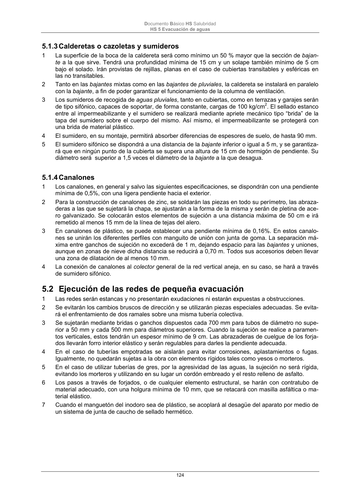

DB-HS Salubridad · edición 2022-06-14 · capa oficial
Documento DB-HS-oficial · SHA-256 del PDF 68df3caacc95f71aee2ec1ba7b2c65ae66155c21e3a8785521b8fdd4fd640d3b
Copia fiel del PDF fuente · Fuente oficial
Ficha de la disposición en la fuente oficial
Formatos: JSON del segmento · Markdown
5.1.4 Canalones 1 Los canalones, en general y salvo las siguientes especificaciones, se dispondrán con una pendiente mínima de 0,5%, con una ligera pendiente hacia el exterior. 2 Para la construcción de canalones de zinc, se soldarán las piezas en todo su perímetro, las abraza- deras a las que se sujetará la chapa, se ajustarán a la forma de la misma y serán de pletina de ace- ro galvanizado. Se colocarán estos elementos de sujeción a una distancia máxima de 50 cm e irá remetido al menos 15 mm de la línea de tejas del alero. 3 En canalones de plástico, se puede establecer una pendiente mínima de 0,16%. En estos canalo- nes se unirán los diferentes perfiles con manguito de unión con junta de goma. La separación má- xima entre ganchos de sujeción no excederá de 1 m, dejando espacio para las bajantes y uniones, aunque en zonas de nieve dicha distancia se reducirá a 0,70 m. Todos sus accesorios deben llevar una zona de dilatación de al menos 10 mm. 4 La conexión de canalones al colector general de la red vertical aneja, en su caso, se hará a través de sumidero sifónico.
